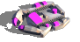

Some vehicles such as crab can be used to gather ore
or transport other units.

Move your crab near freighter to take pontoon a northwest passage:
- Bring your crab near freighter.
- Transfer pontoon from freighter to crab.
- Move the crab near the estuary created by the low tide
- Finally, unload the pontoon on the single hex sea that separates you from the other side